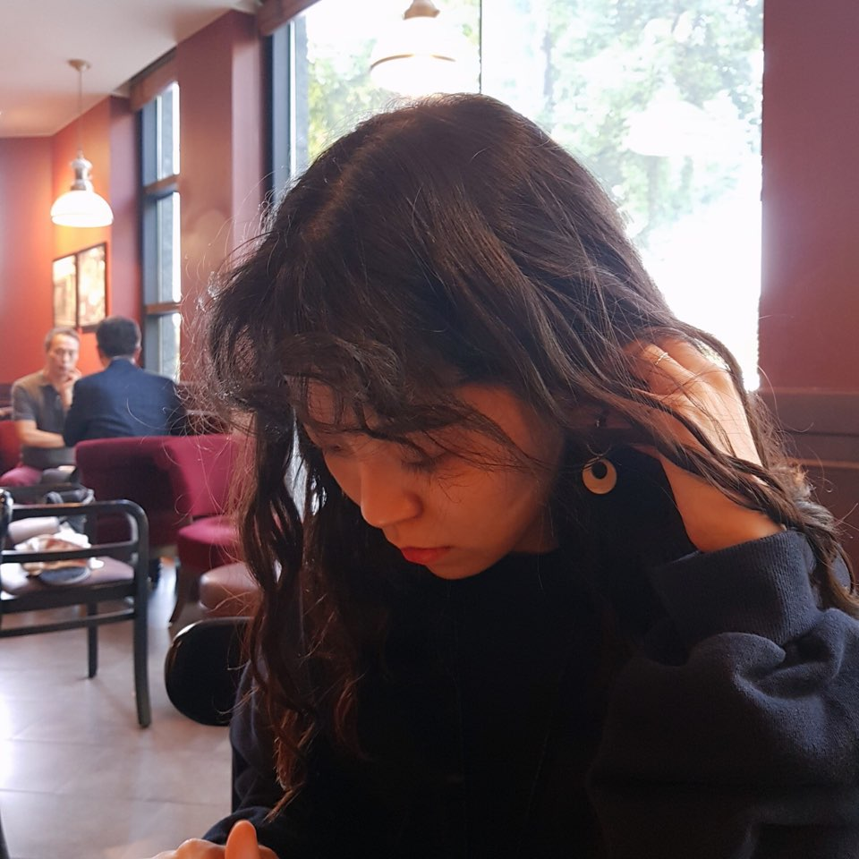

웃기지만 이때만큼 내 꿈이 확고했던 적은 없다. 오히려 20대때는 꿈도 없고 의욕도 없는데 이때는 그렇지 않았다. 내가 피아니스트가 될거라 믿어 의심치 않았으니까. 초등학생 때 꿈꾸다 결국 꿈을 접었고 중학교 가서는 공부만 했다. 그러다 고등학생때 실용음악으로 빠질까 많이 고민했었는데 그것도 결국 흐지부지. 그리고 마지막에 재수하면서 작곡과를 가려고 상담도 받았는데 그것도 흐지부지. 이상하게 거기서 '된다 할수 있다'고 하니까 막 더 자신감이 솟았었는데 1년으론 장담이 안돼서 그랬다. 그렇게 시간이 지나고, 테이프를 휘리릭 감으면, 나는 2019년 1월부터 탱고피아노를 배울까 한다. 예에! 중고등학생때 가입해둔 탱고음악아카데미(?)에 연락을 했고 레슨을 한다고 한다. 예전에는 안하시지 않았냐고 물었는데, 그때도 했다고 한다. 다만 전공자나 관련자들 대상으로 했고 일반인 대상으로 안했을뿐.
하여튼 나한테는 굉장히 럭키럭키한 경우다. 이 이야기를 생활코딩 수업들으면서 그냥 써보기로 한다. yeah!
